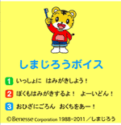
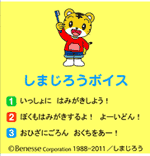

おさそいﾎﾞｲｽ
■使い方
お使いになりたいﾎﾞｲｽを数字ｷｰで選んでください｡
しまじろう

わんわん
※ﾓﾊﾞｲﾙYouTubeを利用して動画をご覧いただけます｡
※ﾓﾊﾞｲﾙYouTubeは大量のﾊﾟｹｯﾄ通信をおこなうｱﾌﾟﾘｹｰｼｮﾝです｡携帯端末からYouTubeで動画を見る前に､ご契約の携帯電話のﾌﾟﾗﾝが｢ﾊﾟｹｯﾄ定額ｻｰﾋﾞｽ｣かどうかご確認ください｡
※ご利用の機種によっては動画が見られないことがあります｡
※音声つきです｡ﾏﾅｰﾓｰﾄﾞを解除してお使いください｡

|
はみがき おさそいﾎﾞｲｽ |
|
歯みがきをしてほしいときに､しまじろうやわんわんが誘導してくれるﾎﾞｲｽです｡ﾊﾟﾍﾟｯﾄの中に携帯電話を入れて使うのもおすすめです｡ ■使い方 お使いになりたいﾎﾞｲｽを数字ｷｰで選んでください｡ |
|
しまじろう  |
|
【Flash 98KB】 |
| ﾀﾞｳﾝﾛｰﾄﾞ |
|
わんわん |
|
【Flash 98KB】 |
|
ﾀﾞｳﾝﾛｰﾄﾞ |
|
ﾎﾞｲｽの使い方動画｢ﾎﾞｲｽって なあに?｣を見る (約30秒) ※ﾓﾊﾞｲﾙYouTubeを利用して動画をご覧いただけます｡ ※ﾓﾊﾞｲﾙYouTubeは大量のﾊﾟｹｯﾄ通信をおこなうｱﾌﾟﾘｹｰｼｮﾝです｡携帯端末からYouTubeで動画を見る前に､ご契約の携帯電話のﾌﾟﾗﾝが｢ﾊﾟｹｯﾄ定額ｻｰﾋﾞｽ｣かどうかご確認ください｡ ※ご利用の機種によっては動画が見られないことがあります｡ ※音声つきです｡ﾏﾅｰﾓｰﾄﾞを解除してお使いください｡ |